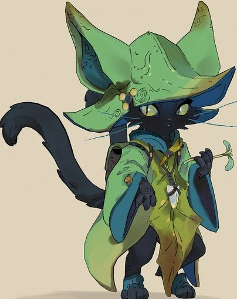

Luminas-The elf
Luminas belongs to the Calien tribe of the elves who were known for not leaving the Gretia forest. After Luminas became an adult he disguised himself as a citizen of Catannia where he got famous for being the 'Golden herbalist' but this was 100 years ago.People say that he is still alive and some have claimed that a wanderer who is the exact description still travels across the globe in search of a spider lily.No one knows why he needs a mythical flower or if is his existence just a myth.
